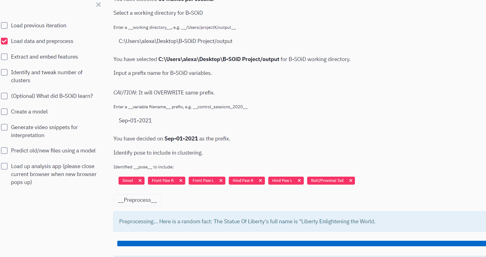

Running for the first time¶
Note
We recommend using several sessions to train the model. B-SOiD can only extract behavioral patterns that it is exposed to, and will improve its classification with more and more diverse inputs. As such, users may want to select input data that is representative of the behavioral repertoire in study (e.g. if an animal is asleep for a majority of the time, limit this preponderance in the training dataset). Also, because behavioral predictions are made independent of the cluster training data, the same data can be used in the train and test phases.
Create a folder on Desktop called B-SOiD Project. Within B-SOiD project, create a session directory named 041919.
Download and save csv file csv file 1 and csv file 2 in that directory.
Example data structure:
where the main B-SOiD Project contains
Load data and preprocess¶
In your default browser application, B-SOiD will automatically pop up as a new tab. First, you will need to select Load data and preprocess on the sidebar.
Retrieve data from working directory¶
Copy the output path where the preprocessed data is stored to the working directory.
Extract and embed features¶
This part computes all physical features and embed based on similarity. The fraction value (0-1) you put in determines the percentage used to embed (random).
Identify and tweak number of clusters¶
Use the slider to modify the number of clusters based on minimum temporal bout. This process can be repeated to optimize the model by checking the ‘Redo’ button.
What did B-SOiD learn?¶
Here you can export the physical features (i.e. spatiotemporal patterns) that went into training the classifier.
Create a model¶
B-SOiD will use random forest classification algorithm to generate a model that will be used to predict future dataset. You can evaluate the performance of the model by checking the confusion matrix and cross-validated accuracy test .. image:: create_model.gif
Generate video snippets for interpretation¶
Generate example videos to check what behaviors were identified and clustered by B-SOiD. If you are not satisfied with the classification, return to ‘Identify and tweak number of clusters’ to modify the number of clusters..

Predict old/new files using a model¶
Here you can make prediction on new/old files using the model you created.